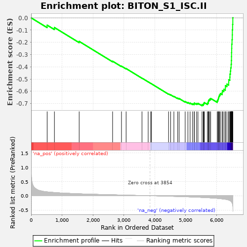
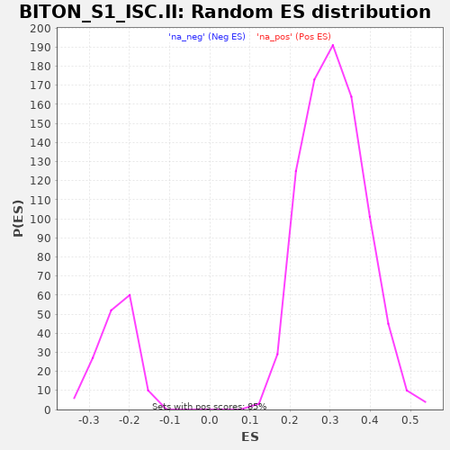

| | | Dataset | al10_v_al2 |
| Phenotype | NoPhenotypeAvailable |
| Upregulated in class | na_neg |
| GeneSet | BITON_S1_ISC.II |
| Enrichment Score (ES) | -0.7181173 |
| Normalized Enrichment Score (NES) | -3.088231 |
| Nominal p-value | 0.0 |
| FDR q-value | 0.0 |
| FWER p-Value | 0.0 |
Table: GSEA Results Summary

Fig 1: Enrichment plot: BITON_S1_ISC.II
Profile of the Running ES Score & Positions of GeneSet Members on the Rank Ordered List
| PROBE | GENE SYMBOL | GENE_TITLE | RANK IN GENE LIST | RANK METRIC SCORE | RUNNING ES | CORE ENRICHMENT | | 1 | Shmt1 | | | 519 | 0.137 | -0.0598 | No |
| 2 | Nfic | | | 755 | 0.114 | -0.0792 | No |
| 3 | Rpl35 | | | 1556 | 0.069 | -0.1925 | No |
| 4 | Arglu1 | | | 2638 | 0.035 | -0.3542 | No |
| 5 | Noxa1 | | | 2926 | 0.027 | -0.3945 | No |
| 6 | Zcchc7 | | | 3076 | 0.022 | -0.4142 | No |
| 7 | Nfkbia | | | 3590 | 0.008 | -0.4923 | No |
| 8 | Zyx | | | 3791 | 0.002 | -0.5229 | No |
| 9 | Ankrd10 | | | 3872 | -0.000 | -0.5352 | No |
| 10 | Rplp1 | | | 3898 | -0.001 | -0.5389 | No |
| 11 | Urod | | | 4451 | -0.018 | -0.6215 | No |
| 12 | Paics | | | 4518 | -0.020 | -0.6288 | No |
| 13 | Tomm7 | | | 4623 | -0.023 | -0.6414 | No |
| 14 | Zfp106 | | | 4746 | -0.027 | -0.6562 | No |
| 15 | Relb | | | 4793 | -0.029 | -0.6590 | No |
| 16 | Rps17 | | | 4989 | -0.036 | -0.6838 | No |
| 17 | 6030458C11Rik | | | 5077 | -0.039 | -0.6914 | No |
| 18 | Rps25 | | | 5148 | -0.042 | -0.6961 | No |
| 19 | Myc | | | 5228 | -0.045 | -0.7016 | No |
| 20 | Rps27 | | | 5282 | -0.048 | -0.7026 | No |
| 21 | Rpl31 | | | 5285 | -0.048 | -0.6958 | No |
| 22 | Gstm1 | | | 5357 | -0.051 | -0.6991 | No |
| 23 | Rps23 | | | 5403 | -0.054 | -0.6980 | No |
| 24 | Rps12 | | | 5534 | -0.060 | -0.7092 | Yes |
| 25 | Rps16 | | | 5574 | -0.062 | -0.7060 | Yes |
| 26 | Rpl36 | | | 5589 | -0.063 | -0.6989 | Yes |
| 27 | Dctd | | | 5607 | -0.064 | -0.6920 | Yes |
| 28 | Rps19 | | | 5708 | -0.070 | -0.6970 | Yes |
| 29 | Car12 | | | 5736 | -0.072 | -0.6905 | Yes |
| 30 | Rps24 | | | 5740 | -0.072 | -0.6803 | Yes |
| 31 | Rpl38 | | | 5753 | -0.073 | -0.6713 | Yes |
| 32 | Rpl36a | | | 5781 | -0.075 | -0.6644 | Yes |
| 33 | Rps15a | | | 5815 | -0.077 | -0.6580 | Yes |
| 34 | Rpl26 | | | 6027 | -0.093 | -0.6768 | Yes |
| 35 | Rpl32 | | | 6050 | -0.096 | -0.6660 | Yes |
| 36 | Rpl37a | | | 6065 | -0.097 | -0.6538 | Yes |
| 37 | Rps10 | | | 6079 | -0.099 | -0.6411 | Yes |
| 38 | Rps14 | | | 6099 | -0.100 | -0.6291 | Yes |
| 39 | Cd320 | | | 6127 | -0.104 | -0.6178 | Yes |
| 40 | Pdrg1 | | | 6186 | -0.112 | -0.6101 | Yes |
| 41 | Rps29 | | | 6194 | -0.113 | -0.5944 | Yes |
| 42 | Rps18 | | | 6242 | -0.120 | -0.5839 | Yes |
| 43 | Rpl23a | | | 6290 | -0.126 | -0.5725 | Yes |
| 44 | Rpl35a | | | 6292 | -0.126 | -0.5539 | Yes |
| 45 | Rpl18a | | | 6341 | -0.138 | -0.5408 | Yes |
| 46 | Rpl39 | | | 6398 | -0.151 | -0.5271 | Yes |
| 47 | Rps13 | | | 6400 | -0.151 | -0.5048 | Yes |
| 48 | Rpl11 | | | 6436 | -0.172 | -0.4847 | Yes |
| 49 | Cyba | | | 6439 | -0.173 | -0.4593 | Yes |
| 50 | Clec2d | | | 6453 | -0.180 | -0.4346 | Yes |
| 51 | Rpl37 | | | 6464 | -0.189 | -0.4080 | Yes |
| 52 | Rps28 | | | 6477 | -0.207 | -0.3791 | Yes |
| 53 | Ndufa7 | | | 6485 | -0.213 | -0.3486 | Yes |
| 54 | Rangrf | | | 6489 | -0.217 | -0.3168 | Yes |
| 55 | Ifitm2 | | | 6491 | -0.220 | -0.2843 | Yes |
| 56 | Rps26 | | | 6495 | -0.231 | -0.2504 | Yes |
| 57 | H2-Ab1 | | | 6498 | -0.237 | -0.2155 | Yes |
| 58 | Rps21 | | | 6506 | -0.252 | -0.1792 | Yes |
| 59 | Ifitm3 | | | 6515 | -0.275 | -0.1396 | Yes |
| 60 | H2-Eb1 | | | 6517 | -0.280 | -0.0982 | Yes |
| 61 | Cd74 | | | 6525 | -0.302 | -0.0544 | Yes |
| 62 | Clca4b | | | 6532 | -0.376 | 0.0006 | Yes |
Table: GSEA details [plain text format]

Fig 2: BITON_S1_ISC.II: Random ES distribution
Gene set null distribution of ES for BITON_S1_ISC.II